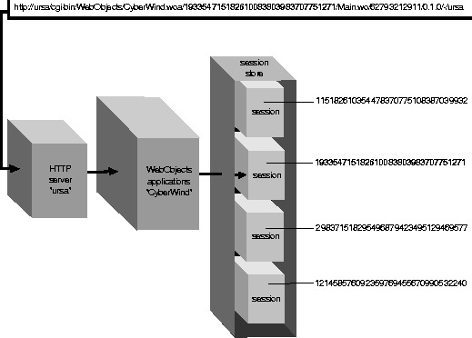

Table of Contents
Table of Contents  Previous Section
Previous Section
Accessing the Session
The application determines whether to create a new session or access an existing session by searching the request URL (which was passed in as an argument to the handleRequest: method) for a session ID. If the request is the first one for the session, the request URL looks like the URL shown in Figure 20.

Figure 20. URL to Start a WebObjects Application
This URL does not contain a session ID, so the application object creates a new session by performing the following steps:
- It sends itself a createSession message.
- As part of the createSession method, it sends the init message or the constructor message to the WOSession (or WebSession) class to create a new session object.
- It sends the awake message to the session object.
If the request is part of an existing session, the request URL looks like the one shown in Figure 21.
Figure 21. WebObjects URL in an Existing Session
This URL contains all of the information necessary to restore the state of the existing session. The session ID comes right after the application name in the URL. Because sessions are designed to protect the data of one user's transactions from that of another, session IDs must not be easily predicted or faked. To this end, WebObjects uses randomly generated 32-digit integers as session IDs. (You can also override WOSession's sessionID method and implement another security scheme if you'd like.)
The application keeps existing, active sessions in the WOSessionStore object. The application object uses the session ID to retrieve the appropriate session from the session store (see Figure 22). The appropriate session object is then sent the awake message to prepare it for the request.

Figure 22. Associating a Request With a Session Object
Table of Contents  Next Section
Next Section